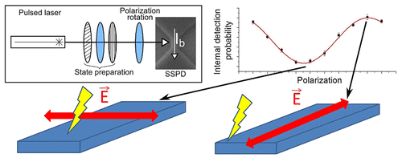

Michiel de Dood
Quantum Optics \ \ Leiden University
30-06-2023 \\ Kick-off meeting Photonics Taiwan in Taipei
Together with Dr. Jelmer Renema (Univ. Twente) and Erik Baalbergen (PhD student, Leiden) we visited Taipei for the long awaited kick-off meetting of the photonics Taiwan consortium. The kick-off took place during the ICSSUR 2023 conference on squeezed-light and uncertainty relations organized by Prof. Ray-Kuang Lee, where both Jelmer Renema and Michiel de Dood presented invited talks. The week in beautiful Taipei provied an excellent opportunity to showcase our work on the physics of superconducting nanowire single photon detectors and strengthen the international collaboration on photonic quantum computing.
10-05-2023 \\ Pre-university students win KHMW prize
Why are morpho butterflies blue? That is what high school students Frederique Kerstens and Koen van Griensven investigated in their high school profile paper at the Leiden Institute for Research in Physics. In doing so, they won the KHMW Profielwerkstukprijs 2023. Their research is part of the pre-university program at Leiden University and was conducted together with Arie van der Meijden (CIBIO, Portugal) and Frans Snik (Sterrenwacht, Leiden).
31-03-2023 \\ Shape matters in Josephson junctions
A superconductor can transport current up to a maximum critical current without the current experiencing electrical resistance. A Josephson junction is created when a very thin insulator is inserted between two superconductors. Some current can tunnel through the insulator that depends on the phase difference between the two superconductors. This phase difference is transcribed by the junction to a voltage and the effect can be used to created superconducting qubits and extremely sensitive magnetic field sensors (SQUIDs). PhD student Xingchen Chen together with M.Sc. student Mio Poortvliet explored superconducting Josephson junctions created by stacking two flakes of the van der Waals material NbSe2. The junction properties depend on the area of the junction and the magnetic field. The key result of their work, published in Phys. Rev. B, is that the properties of the junctions are also very sensitive to the shape of the junction, which explains the imperfections observed in the magnetic-field-dependent critical current of these junctions.
16-06-2022 \\ Teacher of the year nomination
During corona Michiel de Dood was teaching an elective course on statistical physics to the 3rd year B.Sc. students at Leiden University as well as a course on quantum optics to our M.Sc. students. I try to my best and I am very grateful to our students for nominating me for the faculty wide 'teacher of the year' award.
08-06-2022 \\ Consortia in Photonics project awarded
Within the KIC call 'Consortia in Photonics (Taiwan)' two new international research projects have been awarded. In the project 'Hybrid integrated photonic components for optical quantum computing' headed by Dr. Jun-Yi Wu - Tamkang University (Taiwan), and Dr. Jelmer Renema - University of Twente (Netherlands). Leiden University is co-applicant and a PhD student will investigate photon-number resolving detectors together with commercial parties Single Quantum and Delft Circuits. Our goal, together with the partners in Taiwan and in Twente is to use integrated photonics to construct novel components for an all-optical quantum computer.
10-01-2022 \\ Imaging twisted bilayer graphene
Our article on imaging moiré patterns in twisted bilayer graphene with Low Energy Electron Microscopy was published in Nature Communications. These twisted bilayers form when two flakes of graphene are stacked on top of eachother with a small twist angle between the layers. The stacked flakes with each a regular hexagonal lattice of carbon atoms create a superlattice or moiré pattern. For a specific magic angle of 1.1 degree new exciting physics emerges and flat bands are created that lead to superconductivity at low temperatures. PhD students Tobias de Jong, Tjerk Benschop and Xing Chen studied spatial and temporal variations in the moiré pattern using Low Energy Electron Microscopy. They report smaller spatial variation than reported previously and observe thermal fluctuations corresponding to collective atomic displacements over 70 pm on a timescale of seconds. Surprisingly, no untwisting is found up to temperatures of 900 K showing that thermal annealing could be used to decrease local disorder.
06-06-2017 \\ Hotspot interaction length
Superconducting single photon detectors detect single photons efficiently, but are much less sensitive to multiple photons. This is particularly true for longer nanowires when biased at low currents. In this regime multiple photons need to be absorbed at the same position along the wire to create a detection event. Our paper, published today in Applied Physics Letters, uses this effect and quanifies the reducation in multiphoton efficiency in short NbN nanowires. These data can be used to quantify the finite hotspot interaction length resulting in a value of 23 +/- 2 nm.
07-12-2016 \\ Surface plasmons
Surface plasmon lasers require gain and feedback. In our metal hole arrays the gain is provided by an optically pumped InGaAs semiconductor while feedback is generated by in-plane scattering of plasmons on a periodic array of holes in the gold layer. We describe the surface plasmon dispersion relation in terms of scattering coefficients for a complete collection of hexagonal, honeycomb and Kagome lattices. Unlike square lattices, the hexagonal family of lattices provides opportuities of complete two-dimensional feedback which may lead to new lasing behavior in metal hole arrays.
18-07-2016 \\ WSi single photon detectors
Together with our collaborators at TU Eindhoven and NIST Boulder we investigate superconducting single phot detectors made out of WSi using detector tomography on nanofabricated constrictions. WSi meandering wires have a higher reported efficiency as compared to similar device made out of NbN and a question arises if this is due to the morphology of the material and other technical issues or becuase the physics of photon detection is fundamentally different. Given our current understanding of photon detection in NbN we would expect a non-linear depends of the threshold current on photon energy because of the significantly smaller superconducting gap of WSi. Our experiments show a convincing linear dependence with an onset of non-linear behavior for energies below 0.8 eV.
16-05-2016 \\ Understanding plasmon lasers
Lasers emit coherent radiation and can exists if gain and feedback are present in a medium. Plasmons, travelling on a metal hole array on top of a gain medium can thus be used to create plasmonic lasing. The properties of these lasers were not well understood and the amount of experimental data available to improve models of plasmonic lasing was limited. Our latest results published in ACS photonics show that it is possible to retrieve the complete amplitude and phase profile of the lasing mode shedding new light on the operation of nanoscale lasers.
25-04-2016 \\ Yb doped ring resonators
Rare earth ions implanted in ultra-high Q ring resonators show strongly enhanced light-matter intetraction when cooled down to millikelvin temperatures. We achieve Purcell factors up to 10 for non-optimized structures with the prospect to increase this further. The increased interaction between light and Ytterbium ions occurs when the influence of the fluctuating environment is reduced, i.e. when the linewidth of the atom becomes smaller than the linewidth of the cavity. The enhanced interaction is interesting for quantum memmory applications and few photon interactions with small ensembles of Yb ions. Online publication in Nature Photonics
16-02-2016 \\ 4-photon OAM entanglement
We report in Phys. Rev. Lett. the first experimental demonstration of higher-dimensional entanglement between more than two particles. The experiment led by Dr. Wolfgang Loeffler uses the discrete orbital angular momentum of light as a degree of freedom to create spatially entangled photons. The experiments on a carefully tuned and highly efficient source of photon pairs allows to create a reasonable fraction of 4-photon states in the down-conversion. These 4-photon states are selected in the experiment to demonstrate genuine high-dimensional 4-photon entanglement.
24-11-2015 \\ Soft-nanoimprint lithography
Our results on soft-nanoimprint lithography are published in MRS Communications. Soft-nanoimprint lithography is a technique where a polymer stamp is used to create nanoscale patterns. First author Marc Verschuuren has succesfully applied this technique to create nanoholes arrays. These plasmonic structures are known for extra-ordinary light transmission. In this article we show how they can be printed and packaged into a solid-matrix surrounding the gold metal with silica on both sides.
27-10-2015 \\ Photon detection at subwavelength scales
Congratulations Qiang Wang for defending his PhD thesis titled 'Photon detection at subwavelength scales'. In this thesis Qiang Wang describes the method of detector tomogrpahy to characterize and optimize NbN based superconducting single photon detectors. A second part of the thesis describes simulation on novel scanning probe techniques that either probe a nanodetector, or that use the nanodetector as a probe.
01-10-2015 \\ Accuracy of detector tomography
Quantum detector tomogrpahy is an important tool to obtain the probability of multi-photon detection events. The purpose of tomography is to obtian these probabilities in an agnostic way so that understanding of the physics of photon detection is shifted towards the interpretation of these detection probabilities. In a real experiment that is affected by noise it is not clear how accurately these probabilities can be determined. In a recent publication we address how this accuracy can be determined and discuss the various factors that affect tomography on NbN detectors.
14-07-2015 \\ An investigation of NbN detectors with scanning probe techinques
A publication in Optics Express shows how the recent concept of a local detection efficiency can be used to simulate the response of a superconducting single photon detector in a scattering near-field optical microscope. The aim of this simulation is to show that light scattered by a small metal tip can be used to probe these detectors with a resolution of ~20 nm. An experimental realization of this proposal comprises a direct obeservation of the local detection efficiency.
09-07-2015 \\ Nanoscale response of NbN single photon detectors

To unravel the detection mechanism of superconducting single photon detectors we used the fact that light is non-uniformly absorbed for different polarizations of the incoming field. Microscopic models of the detection mechanism predict that the response of these detectors depends on the position where the photon is absorbed. With the aid of tomographic methods we are the first to measure this nanoscale response of the detector and are able to quantitatively explain the response of technoligcally relevant devices. This research, recently published in Nano Letters, reveals the physical mechanism of photon-assited vortex entry as being responsible for the less than one internal detection efficiency of state-of-the-art detectors.
06-03-2015 \\ NbN single photon detectors in magnetic field
When a superconducting single photon detector is placed in a magnetic field the response of these devices is altered. We have performed an experiment on the simplest possible detector that consists of a single constriction. This rules out geometric effects that may affect the response and reveals that an increase in magentic field does not improve detector performance. More importantly these results report an exchange between magentic field and current and show that the mechanism of generating dark counts is fundamentally different from detecting single photons. These results are published in Applied Physics Letters.